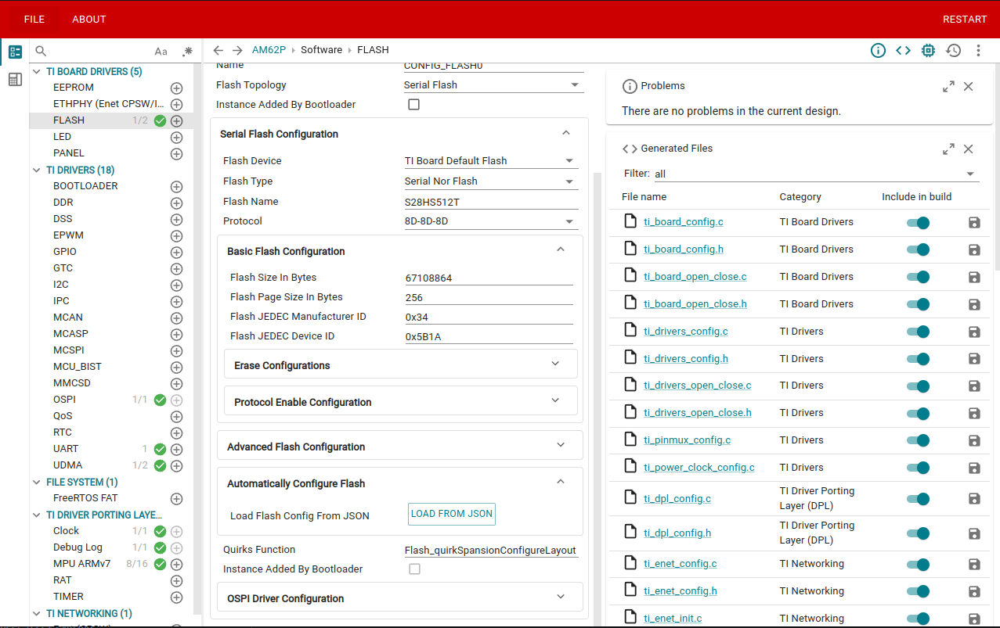

|
AM62Px MCU+ SDK
12.00.00
|
|
|
AM62Px MCU+ SDK
12.00.00
|
|
The driver takes care of all sequencing necessary to perform writes across pages and the application need not take care of the programming intricacies.
The NOR flash S28HS512T present in AM62 SoCs allows users to configure flash in different layouts by writing to the configuration registers, a feature not supported by other NOR flash devices. Other NOR flash parts from vendors like Micron, Macronix, ISSI, and Winbond only support uniform flash layouts, where the entire flash is divided into blocks of uniform size, with blocks further divided into sectors. In these standard flash devices, block erase and sector erase operations can be performed at any offset, erasing either an entire block or a sector based on the operation chosen.
In contrast, the S28HS512T supports sector erase operations only in non-uniform mode specifically on the 4KB sectors. In uniform mode, only block erase operations are allowed, and attempting sector erase operations has no effect.
The S28HS512T supports four different flash layouts:
The S28HS512T NOR flash supports multiple memory layout configurations that affect sector organization and erase operations. The driver automatically configures the flash layout during initialization through the Flash_quirkSpansionConfigureLayout function in flash_nor_ospi.c.
To customize the flash layout, modify the layout configuration using Flash_NorOspiHybridLayoutCfg structure before calling flash open.
| Layout Type | Value | Description |
|---|---|---|
| Uniform Layout | 0U | Standard uniform sector sizes throughout the entire flash memory |
| Hybrid Layout | 1U | Mixed sector sizes for more flexible memory management |
When isHybridLayout is set to 1, you must specify the hybrid layout type using hybridLayoutType:
| Hybrid Layout Type | Value | Description |
|---|---|---|
| Bottom Hybrid | 0U | Smaller sectors at the bottom (low addresses) of flash memory |
| Top Hybrid | 1U | Smaller sectors at the top (high addresses) of flash memory |
| Split Hybrid | 2U | Smaller sectors at both bottom and top of flash memory |
For a hybrid layout with smaller sectors at both the bottom and top of memory (Split Hybrid):
Developers can implement their own custom configuration function to accommodate specific flash layouts according to flash datasheet specifications. This is particularly useful when:
To add a custom flash configuration function:
Flash_Config *cfg parameter. The config struct includes a void* layoutCfg pointer that references your layout configuration.flash_nor_ospi.c following the required signature: quirk_function field in the flash section of your board configuration.Example implementation:

NA
Include the below file to access the APIs
Flash Read API
Flash Write API
Flash Erase API
 1.8.20
1.8.20